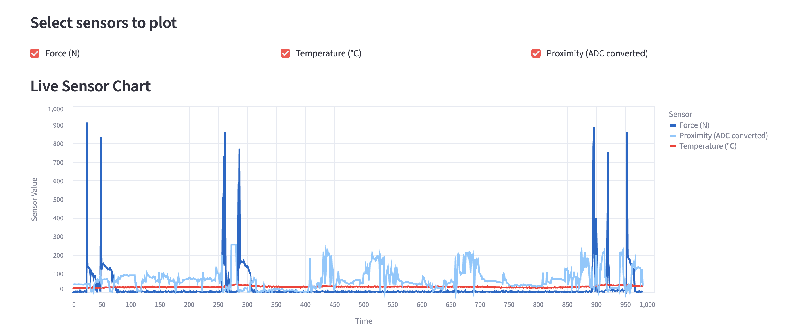
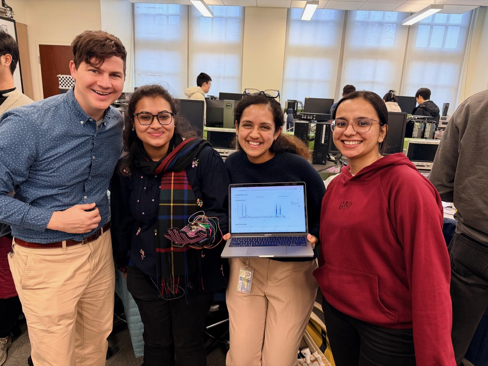

Restoring Touch with
Digital Intelligence
A Smart Haptic Glove for Congenital Insensitivity to Pain (CIPA)
Team #12: Tri-State Buffers
Anushka Jain • Ananya Shivarama Bhat • Devanshi Kalpeshbhai Patel
Abstract & Motivation
The Problem
Individuals with Congenital Insensitivity to Pain with Anhidrosis (CIPA) lack the ability to feel pain, temperature, or touch. Everyday tasks such as olding a hot object or applying too much pressure can become hazardous by causing severe injury without realization.
Our Solution
We propose a Smart Haptic Glove that restores safe sensory awareness. By translating real-world stimuli into intelligent haptic feedback, the glove allows users to feel pressure and temperature through controlled vibrations.
Powered by the ATmega328PB, it integrates FSR force sensors, MCP9700 temperature sensors, and ERM haptic motors into a low-power and wearable assistive device.
System Architecture
Our design combines analog sensing, PWM motor control and real-time OLED visualization.
Block Diagram

Design Vision
We anticipate a sleek, ergonomic form factor.

Technical Specifications
Software Requirements (SRS)
The firmware continuously samples sensors (20Hz+), performs threshold detection, and manages power states.
| SRS ID | Objective | Specifications |
|---|---|---|
| 1 | Configure ATmega328PBMCU | 16 MHz clock, UART @ 9600 baud, LED + haptic GPIO |
| 2 | DC for MCP9700 Temperature Sensor | ADC0 sampled every 500 ms (2 Hz) |
| 3 | ADC for Force Sensor (FSR) | ADC1 sampled every 500 ms (2 Hz) |
| 4 | Proximity Sensor (APDS9960) | I²C PDATA register read every 500 ms (2 Hz) |
| 5 | LCD Display (ST7735 TFT) | Update screen every 500ms (2Hz) |
| 6 | Haptic Feedback Motor | Trigger triple vibration for force alert; continuous vibration for temperature alert |
| 7 | Wireless Transmission | Use HC-05 (changed from ESP32), send telemetry every 500 ms (2 Hz) |
| 8 | Tempresture Threshold | Trigger BURN alert if Temp > 35 °C for ≥5 seconds |
| 9 | Force Threshold | Trigger OUCH alert at ~7-8 N equivalent force (≈70% ADC) |
| 10 | Proximity Threshold | Detect unsafe closeness |
| 11 | Unified Polling Architecture | No interrupts; single 500 ms loop governs entire system |
| 12 | System Integration & Power | Run all modules from 5 V USB, stable grounding |
Hardware Requirements (HRS)
| HRS ID | Objective | Specifications |
|---|---|---|
| 1 | Configure ATmega328PB MCU | 16 MHz clock, 5 V operation, UART and GPIO configuration |
| 2 | Hardware support for temperature sensing | MCP9700 connected to ADC0; sampled every 500 ms (2 Hz) |
| 3 | Hardware Support for force sensing | FSR connected to ADC1; sampled every 500 ms |
| 4 | Integrate APDS9960 proximity sensor | I²C interface; read PDATA register every 500 ms |
| 5 | Configure ST7735 LCD hardware | SPI display updates every 500ms |
| 6 | Configure haptic feedback motor | Motor powered via PD7 with safe driver; triggered by sensor thresholds |
| 7 | Provide wireless communication | HC-05 Bluetooth module at 9600 baud (changed from ESP32) |
| 8 | Ensure safe temperature thresholding | Trigger BURN warning above 35 °C |
| 9 | Ensure safe force thresholding | FSR voltage mapping enables detection around 7-8 N equivalent force. |
| 10 | Maintain stable system power | 5 V USB supply powering MCU, sensors, LCD, Bluetooth |
| 11 | Unify all hardware timing | Entire system operates off a 500 ms polling loop |
| 12 | Integrate all hardware into glove | Proper grounding, wiring, fastening and module positioning |
Development Journey
Challenges & Solutions
Electrical Safety & Form Factor
Challenge: Early prototypes utilized conductive e-sewing thread for a seamless wearable look. However, the thread created dangerous short circuits and potential fire hazards due to the glove's flexibility.
Solution: We pivoted to a hard-wired approach using soldered connections. This sacrificed some aesthetic minimalism for non-negotiable safety and reliability, ensuring consistent power delivery without shorting risks.
Signal Integrity & Noise
Challenge: Activating the haptic motors introduced significant noise into the power rail, corrupting the sensitive ADC readings from force and temperature sensors.
Solution: We implemented a unified 2Hz polling architecture to separate sensor acquisition from motor actuation and added decoupling capacitors. This ensured clean signal processing even during active haptic feedback.
Wireless Optimization
Challenge: The initial ESP32 integration required complex voltage regulation (3.3V) and consumed excessive power for our battery-operated goals.
Solution: We replaced it with an HC-05 Bluetooth module. This simplified the power architecture (running directly off 5V) and proved sufficient for our low-bandwidth telemetry requirements.
Final Demo Results
The system successfully provides two modes of feedback:
- Local Tactile: Immediate vibration for hazards.
- Remote Visualization: Live data dashboard.
Project Outcome
We created a fully functional wearable that detects environmental cues and translates them into real-time sensations.
Live Dashboard Analytics
In addition to local haptic feedback, our system streams data live to a web dashboard. This wireless telemetry matches the serial terminal output, ensuring that remote monitoring is as accurate as direct debugging.
The chart below demonstrates the real-time converted readings from our force and temperature sensors, proving the stability and responsiveness of our data pipeline.
Final Product


Verification & Validation
The NeuroTouch system underwent extensive validation to ensure reliability in real-world scenarios. We rigorously tested for thermal accuracy, pressure sensitivity, and response latency to guarantee user safety.
Our tests confirmed that the device successfully distinguishes between safe interactions and hazardous stimuli, triggering immediate haptic feedback within 50ms of detection. Long-duration stability tests further verified that our unified polling architecture maintains consistent operation without power drift or system resets.
| Metric | Performance Outcome |
|---|---|
| Hazard Response | Instant haptic feedback (< 50ms) for hazards> 35°C or > 8N force. |
| System Stability | 100% uptime during steady-state testing on 5V supply. |
| Detection Accuracy | Reliable identification of unsafe pressure and temperature levels. |
Key Learnings & Reflections
The Reality of Hardware Integration
Transitioning from simulation to physical implementation revealed the intricacies of signal noise, power management, and mechanical constraints. We mastered the challenge of stabilizing ADC readings while simultaneously driving haptic motors and maintaining wireless UART telemetry.
Safety-First Engineering
Designing for users with CIPA required a shift in mindset—prioritizing fail-safe mechanisms over complexity. This drove our decision to pivot from e-sewing to robust soldered connections and to simplify our wireless stack, ensuring that the device's core safety features could never be compromised.
Adaptive Problem Solving
Our journey was defined by iterative improvement. When initial sensor placements proved inconsistent, we redesigned the glove's layout. When wireless modules complicated the power budget, we optimized our telemetry approach. These pivots underscored the importance of flexibility in embedded systems design.
Meet the Team
Tri-State Buffers
Team #12
